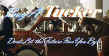
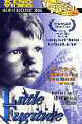
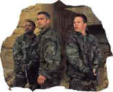

|

Selections from the Feature Archive include articles on Akira Kurosawa, Frank Darabont, Blonde Bimbos, Hollywood Street Gangs, or Vietnam: The Hollywood Pariah, and many
more....
Puttin on the Ritz

Fred Astaire and Cyd Charisse bring Silk Stockings to life, a
remake of Ninotchka, one of many films successfully turned into musicals
by the Hollywood dream factory. Read all about remakes into musicals by
clicking on the divine dancers.
Selections from the Feature
Archive include articles on Akira Kurosawa, Frank Darabont, Blonde Bimbos, Hollywood Street Gangs, or Vietnam: The Hollywood Pariah, and many
more....

Catch the Hollywood take on Blonde Bimbos by clicking on the
image above.
The Feature Archive has articles ranging from Akira Kurosawa to Blonde Bimbos.
Movie Rage: Death in the Aisles
Everyone knows what it feels like to get angry at the movies
these days. Here's a humorous but not so delightful view of big screen
misery.
Selections from the Feature
Archive include articles on Akira Kurosawa, Blonde Bimbos, Frank Darabont, Steven Culp, John Herzfeld or Vietnam: The Hollywood Pariah, and many
more....
 From The Adventures of Robin Hood to
Casablanca, director Michael Curtiz made movies that delighted
audiences. Click on the image for Michael Curtiz: Directed Passion. From The Adventures of Robin Hood to
Casablanca, director Michael Curtiz made movies that delighted
audiences. Click on the image for Michael Curtiz: Directed Passion.
Selections from the Feature
Archive include articles on Akira Kurosawa, Frank Darabont, Blonde Bimbos, Hollywood Street Gangs, or Vietnam: The Hollywood Pariah, and many
more....
Film noir: The phrase
hangs awkwardly on the tongue, shadowy images peek out from behind
half-closed doors. Click on the Noir and Noir Again symbol for a look into
the dark spaces of Hollywood's revisiting of film noir.
Selections from the Feature
Archive include articles on Akira Kurosawa, Frank Darabont, Blonde Bimbos, Hollywood Street Gangs, or Vietnam: The Hollywood Pariah, and many
more....

Click on the image of The Heistmasters for an interesting feature
on the tough guys that pull off the big jobs.
Selections from the Feature
Archive include articles on Akira Kurosawa, Frank Darabont, Blonde Bimbos, Hollywood Street Gangs, or Vietnam: The Hollywood Pariah, and many
more....

What actor would you vote whose screen persona best exemplified the
fabric of the president of the United States? Check act Acting Presidential for a look at the many
actors who have coveted The Oval Office.
Selections from the Feature
Archive include articles on Akira Kurosawa, Frank Darabont, Blonde Bimbos, Hollywood Street Gangs, or Vietnam: The Hollywood Pariah, and many
more....
Transferring
Zoetrope's Vision

American Zoetrope's Technical Director Kim Aubry talks about bringing
the studios product out in the best light. Click on the image for the
interview.
Selections from the Feature
Archive include articles on Akira Kurosawa, Frank Darabont, Blonde Bimbos, Hollywood Street Gangs, or Vietnam: The Hollywood Pariah, and many
more....

Screen legend Gary Cooper won two Academy Awards© as Best
Actor during a career that included 114 Hollywood films. Click on his
image for a bio and poster images.
Selections from the Feature
Archive include articles on Akira Kurosawa, Frank Darabont, Blonde Bimbos, Hollywood Street Gangs, or Vietnam: The Hollywood Pariah, and many
more....
Anthony Quinn 
A larger than life screen presence brought joy to audiences for six
decades. Anthony Quinn had a rare zest for life that
was invested in many of his roles. Long live his memory. Click on the
image for a look at his career.
Selections from the Feature
Archive include articles on Akira Kurosawa, Blonde Bimbos, Frank Darabont, Steven Culp, John Herzfeld or Vietnam: The Hollywood Pariah, and many
more....
Hitchcock on DVD

Information and review links to Alfred Hitchcock on DVD
Selections from the Feature
Archive include articles on Akira Kurosawa, Blonde Bimbos, Frank Darabont, Steven Culp, John Herzfeld or Vietnam: The Hollywood Pariah, and many
more....
Nobody's
Perfect

Billy Wilder left movie lovers a legacy of cinematic treasure. From
defining Film Noir to outrageous comedy, writer/director Wilder
delivered the goods with consummate style.
|
Selections from the Feature
Archive include articles on Akira Kurosawa, Blonde Bimbos, Frank Darabont, Steven Culp, John Herzfeld or Vietnam: The Hollywood Pariah, and many
more....
The Exquisite Muse of Zhang Yimou

The powerful image-making of Zhang Yimou has revealed itself in
virtually every film he has made. Coupled with his remarkable
collaboration with actress Gong Li, Zhang's has built a stunning body of
work Click the image to read all about it.
Selections from the Feature
Archive include articles on Akira Kurosawa, Frank Darabont, Blonde Bimbos, Hollywood Street Gangs, or Vietnam: The Hollywood Pariah, and many
more....
Body Parts

Hollywood's long fascination with parts of the body is
explored piece by piece.

The wonderful comedy of Danny Kaye comes from a sweet source,
making it live for audiences of all ages. Patter songs and graceful
dances are part of Kaye's world. Click on the image for Any Day Danny
Kaye.
Selections from the Feature
Archive include articles on Akira Kurosawa, Frank Darabont, Blonde Bimbos, Hollywood Street Gangs, or Vietnam: The Hollywood Pariah, and many
more....

Hail, Hail, the Gangs in Hollywood
From Angels with Dirty
Faces to West Side Story to Menace II Society, Hollywood has depicted
youth gangs as reflections of the times.
Selections from the Feature
Archive include articles on Akira Kurosawa, Blonde Bimbos, Frank Darabont, Steven Culp, John Herzfeld or Vietnam: The Hollywood Pariah, and many
more....

Watching Movies or Watching Video
Don't lose sight of why you bought that DVD in the first place.
Selections from the Feature
Archive include articles on Akira Kurosawa, Frank Darabont, Blonde Bimbos, Hollywood Street Gangs, or Vietnam: The Hollywood Pariah, and many
more....

Is North by Northwest Hollywood's definitive exploration of the nose?
From schnozzles to beezeers, film mavens make the most of the foremost.
Click on Mount Hitchcock for more.
Selections from the Feature
Archive include articles on Akira Kurosawa, Frank Darabont, Blonde Bimbos, Hollywood Street Gangs, or Vietnam: The Hollywood Pariah, and many
more....
Screen Voices
.jpg)
Screen Voices and style of delivery often stamp an actor's
screen image indelibly. Click the lips to read more.
Selections from the Feature
Archive include articles on Akira Kurosawa, Frank Darabont, Blonde Bimbos, Hollywood Street Gangs, or Vietnam: The Hollywood Pariah, and many
more....
Richard Widmark

Widmark laid claim to some of the best twisted film sensibilities ever
recorded on celluloid. Find out more about his career with a profile and
poster images
Selections from the Feature
Archive include articles on Akira Kurosawa, Frank Darabont, Blonde Bimbos, Hollywood Street Gangs, or Vietnam: The Hollywood Pariah, and many
more....
Sophia mi Amore
Sophia mi Amore: That's what I thought the first time I saw
one of the screen's sexiest women in Boy on a Dolphin. Maybe not in
those words, but you get the idea. For a look a Sophia's career from one
perspective, click on her image. Includes a selection of posters from
her movies.
Feature
Archive include articles on Akira Kurosawa, Frank Darabont, Blonde Bimbos, Hollywood Street Gangs, or Vietnam: The Hollywood Pariah, and many
more....
The 1939 Vintage

Was it the best year ever for great films? Click on the bottle for more.
Looking for a good Foreign Film Fix? Here's a list of
reviews that can get you started on an overdose. Click here to
satisfy the urge.
Selections from the Feature
Archive include articles on Akira Kurosawa, Blonde Bimbos, Frank Darabont, Steven Culp, John Herzfeld or Vietnam: The Hollywood Pariah, and many
more....
Made For
Second Billing

The B movie, conceived in poverty and dedicated to the proposition of
double features in movie theaters often rose above its limited artistic
origins. Click on the B for more.

Check out these Foreign language films
reviewed at Films on Disc. All have English subtitles. Quality varies,
but often these DVDs will be the only chance you have to see some films
on DVD. Click on the image.
|
Selections from the Feature
Archive include articles on Akira Kurosawa, Blonde Bimbos, Frank Darabont, Steven Culp, John Herzfeld or Vietnam: The Hollywood Pariah, and many
more....
Vietnam: The Hollywood Pariah

During World War II, Hollywood pumped out war movies one after the
other. Vietnam was was another story. As far as Hollywood was concerned
it was a pariah.
Selections from the Feature
Archive include articles on Akira Kurosawa, Frank Darabont, Blonde Bimbos, Hollywood Street Gangs, or Vietnam: The Hollywood Pariah, and many
more....

Click on the image above for as original view of Akira Kurosawa's work
Selections from the feature archive include articles on
Akira Kurosawa, Frank
Darabont, Blonde Bimbos, Hollywood Street Gangs, or Vietnam: The
Hollywood Pariah, and many more....
Gotta Dance
 Fred
and Ginger tapped their way into the hearts of movie fans everywhere. Stu
Kobak takes a look at some of those dance movies that gifted
audiences toe-tapping pleasure. Click on the image to get in on the
beat. Fred
and Ginger tapped their way into the hearts of movie fans everywhere. Stu
Kobak takes a look at some of those dance movies that gifted
audiences toe-tapping pleasure. Click on the image to get in on the
beat.
Selections from the Feature Archive include articles on Akira Kurosawa, Frank Darabont, Blonde Bimbos, Hollywood Street Gangs, or Vietnam: The Hollywood Pariah, and many
more....
Redeeming the Writer:
A Conversation with Frank Darabont
Selections from the Feature
Archive include articles on Akira Kurosawa, Blonde Bimbos, Frank Darabont, Steven Culp, John Herzfeld or Vietnam: The Hollywood Pariah, and many
more....

The Academy of Motion Picture Arts Sciences and has a soft spot reserved
for peers taking on the battle of the bottle. Click on the bottle to
learn more about the magic of Oscar® Formula One.
Selections from the Feature
Archive include articles on Akira Kurosawa, Frank Darabont, Blonde Bimbos, Hollywood Street Gangs, or Vietnam: The Hollywood Pariah, and many
more....

Movie Mags on the Net
Movie magazine have made a full-scale invasion of the Net and
online users are getting big benefits. Boutique publications are
competing with the big boys presenting a wealth of movie
information.
Selections from the Feature
Archive include articles on Akira Kurosawa, Frank Darabont, Blonde Bimbos, Hollywood Street Gangs, or Vietnam: The Hollywood Pariah, and many
more....
A Western is a Western is a Western

Place or time it's still a Western from John Ford's Drums Along the
Mohawk to John Sturges' Bad Day at Black Rock.
Selections from the Feature
Archive include articles on Akira Kurosawa, Frank Darabont, Blonde Bimbos, Hollywood Street Gangs, or Vietnam: The Hollywood Pariah, and many
more....
Roman Holiday
Join the editor and his family on a trip through Roman movie sites in
this unusual feature.
Selections from the Feature
Archive include articles on Akira Kurosawa, Frank Darabont, Blonde Bimbos, Hollywood Street Gangs, or Vietnam: The Hollywood Pariah, and many
more..

Stanley's Kramer's vision of film personified taste and dignity. He was
truly a Hollywood Class act. Click on the image for a
brief bio and poster images.
Selections from the Feature
Archive include articles on Akira Kurosawa, Blonde Bimbos, Frank Darabont, Steven Culp, John Herzfeld or Vietnam: The Hollywood Pariah, and many
more....
The Bitch Brigade

A line-up of lean-lipped actresses who marched through
Hollywood in a high heeled goose step armed with razor sharp dialogue.
Click on the image to read all about them.
Selections from the Feature
Archive include articles on Akira Kurosawa, Blonde Bimbos, Frank Darabont, Steven Culp, John Herzfeld or Vietnam: The Hollywood Pariah, and many
more....
Thorough a Lens, Obliquely

Flicks about Hollywood make fascinating material, but the establishment
isn't always totally forthcoming. Click on the Hollywood montage for a
look at some of the best Hollywood films about the movie-making
business.
|
Selections from the Feature Archive include articles on Akira Kurosawa, Blonde Bimbos, Frank Darabont, Steven Culp, John Herzfeld or Vietnam: The Hollywood Pariah, and many
more....|
Epic Images of Kurosawa

Click on the image above for an original view of Akira Kurosawa's work
Selections from the Feature
Archive include articles on Akira Kurosawa, Frank Darabont, Blonde Bimbos, Hollywood Street Gangs, or Vietnam: The Hollywood Pariah, and many
more....
Sturges Emerges

Preston Sturges was Hollywood's resident comic genius for
more than a decade. His movies are timeless. Click on his image to read
all about it.
The Feature Archive has articles ranging from Akira Kurosawa to Blonde Bimbos.

Click on the image above for a "dream interview"
with director John Ford.
Selections from the Feature
Archive include articles on Akira Kurosawa, Blonde Bimbos, Frank Darabont, Steven Culp, John Herzfeld or Vietnam: The Hollywood Pariah, and many
more....
Robert A.
Harris
Tilting at Hollywood
He's part of the dynamic duo that restored Lawrence of Arabia,
Spartacus, My Fair Lady and Vertigo. Harris rides a white horse into the
for the cause of preserving our film legacy. Click on the image to read
more.
Selections from the Feature
Archive include articles on Akira Kurosawa, Frank Darabont, Blonde Bimbos, Hollywood Street Gangs, or Vietnam: The Hollywood Pariah, and many
more....
Passing the Celluloid Baton
Sharing movie experiences from generation
to generation is a precious gift. Click on the hands for a closer look.
Selections from the Feature
Archive include articles on Akira Kurosawa, Frank Darabont, Blonde Bimbos, Hollywood Street Gangs, or Vietnam: The Hollywood Pariah, and many
more....

Want to compare the home run swing of Jack Elliot to former
Japanese Home Run King Daryl Spencer? Click on the baseball for Fastballs in Japan.
Selections from the Feature
Archive include articles on Akira Kurosawa, Frank Darabont, Blonde Bimbos, Hollywood Street Gangs, or Vietnam: The Hollywood Pariah, and many
more....
 Why do Al Pacino, Gene Hackman, Pat
O'Brien and Goldie Hawn fall into a select group of actors? Find out
more by clicking the Hollywood on the Sidelines symbol. Why do Al Pacino, Gene Hackman, Pat
O'Brien and Goldie Hawn fall into a select group of actors? Find out
more by clicking the Hollywood on the Sidelines symbol.
Selections from the Feature
Archive include articles on Akira Kurosawa, Frank Darabont, Blonde Bimbos, Hollywood Street Gangs, or Vietnam: The Hollywood Pariah, and many
more....
Capturing Kennedy

Steven Culp extracts the essence of Robert F. Kennedy in Roger
Donaldson's outstanding feature Thirteen Days. Culp recently shared insights
on the performance and his career with Films on Disc. Click the image
for more.
Selections from the Feature
Archive include articles on Akira Kurosawa, Frank Darabont, Blonde Bimbos, Hollywood Street Gangs, or Vietnam: The Hollywood Pariah, and many
more....
The Compressionist's Nightmare

An interview with WAMO's DVD Compressionist Jim Babinski explores
transferring video to DVD.
Selections from the Feature
Archive include articles on Akira Kurosawa, Blonde Bimbos, Frank Darabont, Steven Culp, John Herzfeld or Vietnam: The Hollywood Pariah, and many
more....
Director Walks the Wire
Balanced by an armor of movie lore and filmmaking daring,
director John Herzfeld is comfortable walking the high wire. Check out
this interview by Stu Kobak.
Selections from the Feature
Archive include articles on Akira Kurosawa, Blonde Bimbos, Frank Darabont, Steven Culp, John Herzfeld or Vietnam: The Hollywood Pariah, and many
more....
OSCAR© WINNERS ON AND OFF THE DVD SHELF.

Best Picture Oscar© winners are well-represented on DVD, but many actor
and actress winners are DVDMIA.
|
|
 
ISF Course Instructors Jim Burns and Kevin Miller are hosting the Digital Film Forum. Join
professionals and enthusiasts for lively home theater discussion.

Timely DVD reviews and an easy-to-use interface. Weekly
contests.

A new entry in the 2001 home theater site sweepstakes. Chief focus on
hardware reviews with a smattering of software.

One of the Web's most religiously followed DVD reviewers, Robert
(Obi) George fires the review guns at the Home Theater Forum and from
his own site as well.

A love of movies drives this small DVD production company, Synapse
Films. Currently specializing in horror and cult films. Watch
for new DVD releases of film festival independents as Synapse branches
out.
 DVD Informatrix is a British site
providing a variety of DVD information, including lots of DVD software.
Check it out from articles to links. DVD Informatrix is a British site
providing a variety of DVD information, including lots of DVD software.
Check it out from articles to links.

Fine reviews, features and news on DVD. The Big Picture has been doing DVD as long as
anyone. Jeff McNeal and Bob Banka feed on a steady diet of DVDs.

Cyber Theater is an outstanding source for accurate
video information. Check out their 16 x 9 format guide for a thorough
understanding of DVD encoded that way.

Reliable and friendly DVD sales service has been a hallmark of Digital Eyes
for more than three years. Home to Robert (Obi) George's DVD reviews.

DVD Demystified makes it all clear. The official Internet DVD
FAQ for the rec.video.dvd Usenet newsgroups.

DVDinsider is a daily email publication targeting the DVD
Industry Professional. The publication includes current news, events,
stock prices and more.

The DVD
Answer Man is a new site devoted to spreading the DVD gospel.
Answers to questions, reviews, links and more....

DVD links, information about Web specials, news, Site
reviews.

DVD Reviews and more.
The credo behind DVD Angle is "we cater to no one, and we call it
as we see it."

DVD retailer of Canadian and US domestic releases.

A vast reservoir of DVD information, reviews, the kitchen sink. Check
out their huge DVD database including reviews from many sites.

DVD King does the retail thing these days selling DVDs.

DVD etailer.

DVD News, Reviews, Previews, Easter Eggs and more.
 Graphic
Expectations is an excellent resource for large 47 x 63"
French movie posters. Graphic
Expectations is an excellent resource for large 47 x 63"
French movie posters.
 A huge selection of French movie posters with images galore. Don't miss
this site if you ate interested in lovely French posters.
A huge selection of French movie posters with images galore. Don't miss
this site if you ate interested in lovely French posters.
 Large variety
of movie posters for sale now specializing in Polish and Japanese paper.
Easy interface and a Soho gallery storefront. Large variety
of movie posters for sale now specializing in Polish and Japanese paper.
Easy interface and a Soho gallery storefront.
 Across
the Bridge Posters won't sell you the Brooklyn Bridge, but
have a look at their selection of movie posters. Across
the Bridge Posters won't sell you the Brooklyn Bridge, but
have a look at their selection of movie posters.
Avid-Collector
Posters

Great selection of big foreign paper, plus the home of J. Fields linen
service.

Terrific resource for learning about the ins and outs of
movie poster collecting.

Vintage posters from around the globe. Excellent selection of Italian
movie posters.
|

BargainFlix doesn't sell movies! We just tell you where to get them
for the best price! DVD reviews, giveaways and more.

Glenn Erickson's insightful DVD reviews have been a Internet fixture for
several years. Check out some of his sophisticated feature articles.
Currently hosted by DVD Talk.

ISF Monitor
Calibrations in the Tristate New York area. Lots of hardware
info and frequent hardware peaks from video expert Kevin Miller. They
may be judgmental, but that's the point, isn't it. Lots of DVD reviews
plus news and more.

World class video expert Joe Kane's home on the Internet. Look
for details on the new DVD Essentials.

ISF presenter and industry consultant Jim Burns provides info and
HDTV and other areas on his site.

Rent the hottest movies at DVDO with no monthly charges, late fees or
due dates! Upgrade your free membership anytime to our exclusive Double Feature
Club

Excellent British based DVD review site that features Region 2 and
Region 1 releases. Check out their fine interviews as well.

DVDAnswers offers news, reviews and features. Over the
coming months, the site will continue continues to grow as they strive
to make DVDAnswers the ultimate DVD website!

Buddhacon features a wide
range of reviews from DVDs, first-run movies to top-selling albums.
Editorials, features and more. User comments appended.

Manufacturer of computer-video interfaces, switchers, distribution
amplifiers, computer-video scan converters, and high resolution cable.
Found in many high end home theater systems.

Maximizing home theater sound and image featuring quality
interconnects and speaker wire.

Runco home theater products continue to be a force for better
imaging. Leaders in high end projectors with a vertical line of display
devices.

DiscReviews.com
is a new DVD review site with a slick interface.

Nearly 40 key software and hardware companies representing
leading consumer electronics giants, major movie studios home video and
music video units have joined forces to establish the DVD Video Group.

DVD Easter Eggs
How do you take them? Fried or scrambled. Get the secrets
here.

Excellent resource with DVD reviews, forum and more. Home of
the DVD Savant.

DVD Price Search
Allows you to create a "Comparison Cart" filled
with the DVD titles that you are interested in buying.
 The Cinematheque is a
cultural, arts organization that programs year-round specialty film
series at the newly renovated, landmark 1922 Egyptian Theatre on
Hollywood Boulevard! The Cinematheque is a
cultural, arts organization that programs year-round specialty film
series at the newly renovated, landmark 1922 Egyptian Theatre on
Hollywood Boulevard!

Mystery writer Fred Hunter digs into classic films on DVD. Check out his
insightful reviews at The Classics on DVD.
 Jim Doolittle Jim Doolittle
ISF Instructor. Premier calibrator and expert front projection system
setup technician in the Boston area.

The judges are back in the court room after a short absence for a face
lift.

 A new
online DVD retailer specializing in the Canadian market. Look for some
interesting loss leaders and their buy ten get one free program. A new
online DVD retailer specializing in the Canadian market. Look for some
interesting loss leaders and their buy ten get one free program.
DVDRAMA
One of France's outstanding DVD resources. Par le vous DVD?

One of the prime resources for DVD information: rumors,
reviews and news.

Everything you wanted to know about animation on DVD.
Reviews, news, forum. Webmaster Chris Beveridge.

Original articles, DVD reviews, links, forum discussion and more.

The DVD Forum is an international association of hardware manufacturers,
software firms and other users of Digital Versatile Discs (the "DVD
Format"), created for the purpose of exchanging and disseminating
ideas and information about the DVD Format and its technical
capabilities, improvements and innovations.
 It rains a lot in Portland, so DVDcorner.net
provides an umbrella of entertainment with lots of DVD reviews and DVD
news. Check out the monthly give-a-ways too!. It rains a lot in Portland, so DVDcorner.net
provides an umbrella of entertainment with lots of DVD reviews and DVD
news. Check out the monthly give-a-ways too!.

The Cinema Laser
A home grown magazine for laserphiles that has been publishing for a
number of years and has embraced DVD in a big way. Lots of helpful
information.

Doug Pratt's been doing almost longer than anyone in the business,
reviewing laser discs, that is, and now DVDs too. The venerable
Laserdisc Newsletter has been publishing since 1984. Pratt probably has
a large enough stock of laser discs in his house to build a DVD-proof
bomb shelter. Check out his on-line reviews at DVDlaser.com.

The American Widescreen Museum, is the
ultimate resource for widescreen movie information, Martin Hart's
reliable site is a great tool for movie buffs.

The National Film Preservation Foundation (NFPF) is the
nonprofit organization created by the U.S. Congress to save America's
film heritage.

An elegantly presented fan site dedicated to one of Hollywood's great
action stars.

Films of the Golden Age is
a showcase for special feature articles on film people
and Hollywood history, all illustrated with beautiful photographs and
classic movie art.

Classic Images on classic films, featuring news, reviews,
obituaries, film convention reports, and detailed articles on film
people, from the most famous to the most obscure

Easy to use interface with lots of vintage posters for sale.

In the Mine are movie posters, autographs of your favorite stars,
original movie heralds and more!
v

The publication you can't do without if your interested in Movie
Posters.
Umberto Passini
Online

Vintage & Contemporary Film Poster Art. Umberto has
developed a fine Internet reputation as reliable and honest. Nice
posters too!
|
 Have you visited Home Theater
Talk lately? One of the friendliest places on the Net for
Home Theater and DVD discussion, you can get help for installation
problems or simply share your opinions with other Vidiots. Have you visited Home Theater
Talk lately? One of the friendliest places on the Net for
Home Theater and DVD discussion, you can get help for installation
problems or simply share your opinions with other Vidiots.

DVD reviews for women from a woman's point of view

DVD Dimensions sells DVDs from an easy to use online
interface.

"CinemaQuest has matched the correct TV color of gray in a light
fixture."__Joe Kane
Monitor bias lighting in a pre-packaged configuration. Take the strain
off your eyes.

"Products and services perfecting home theater"
ISF Calibrations in Colorado, 6500K monitor bias lighting.

List
Your DVD
Reader DVD Reviews and base DVD information. You can also
submit a list of your favorite DVDs.
MRQE
Find reams of movie and DVD
reviews at the Movie Review Query Engine, a index of reviews appearing
on the Internet.
 The Argonaut
Foundation is involved in promoting film, film score, and movie
location restoration. They are currently involved in promoting the
restoration of the site for John Wayne's The Alamo. For more
information, click on the picture of the Duke. The Argonaut
Foundation is involved in promoting film, film score, and movie
location restoration. They are currently involved in promoting the
restoration of the site for John Wayne's The Alamo. For more
information, click on the picture of the Duke.
 Lovers of Hong Kong
movies will relish MC4's site that includes reviews and
other information about the Hong Kong movie scene. Lovers of Hong Kong
movies will relish MC4's site that includes reviews and
other information about the Hong Kong movie scene.
Imaging Science Foundation
The Imaging Science Foundation promotes proper standards in
home theater viewing. ISF trained technicians offer monitor calibration
services to consumers. The difference in a properly calibrated
monitor can be astounding. Click on the image to find an ISF member near
you.

Home Vision Cinema
Classic and foreign motion pictures on VHS tape. The title
selection is excellent and informative essays are provided for
many of the films.

A great place for movie lovers and techies to visit for
exchange of ideas. New speedy interface is an inspiration for more
dialogue. Home of Robert( Obi) George's DVD reviews.
culturevulture.net
More than just candid film reviews, culturevulture looks at
art, theater, dance and more. Worth a visit and a bookmark

Looking for information about widescreen movies and hardware.
The
Widescreen Movie Center is the place to go.

The AV Science Forum provides great feedback on the latest
home theater equipment with a wide range of opinions. Outstanding home
theater resource.

An on-line Home Theater magazine with excellent hardware reviews,
including thorough and responsible research. Check it out.

The name tells all.

A self-proclaimed bastion of irreverence place where
Joe Public smacks the heck out of the studio execs.

Home of The American Film Institute.

Reviews of affordable remote controls in the market place. Codes
and tips as well.
 ETEKNet is the web's only
24-hour, totally FREE source for all your home theater, DVD, Dreamcast,
PC, and Networking tech support needs! ETEKNet is the web's only
24-hour, totally FREE source for all your home theater, DVD, Dreamcast,
PC, and Networking tech support needs!

Venerable electronics industry magazine with excellent online selections
from their hard book.

Now a major independent DVD distributor, Image has parlayed its laser
disc business to success. Great DVD release calendar info.

The home of Francis Ford Coppola's Zoetrope
Studios has more corridors of interest than you might expect.
|

Agoraquest is offering reviews, forums, news, and more
dedicated to Sony products including, televisions, cameras, audio, DVD,
and more.

A home theater site filled with a host of useful information, including
links to many other site.
 Kinoeye Archive Kinoeye Archive
This is a resource of all content-rich materials on the web
relating to Central and East European cinema. The ultimate aim of the
Kinoeye Archive is to provide a near-as-damn-it definitive index of
intelligent and thoughtful English-language analysis of Central and
Eastern European cinema on the web.

Images is a non-commercial Web site created for everyone who enjoys
movies and popular culture. Images is published quarterly; however, new
reviews will appear each week, so check back often.
Werner Herzog Film
![[ Werner Herzog ]](images/werner-herzog.jpg)
The Web site of director Werner Herzog includes lots of great material.
A perfect stop for anyone who admires his films.
 Gary Morris's insightful
publication Bright Lights Film Journal turns the celluloid in films from
a unique perspective. Click on the image above for more pure movie
views. Gary Morris's insightful
publication Bright Lights Film Journal turns the celluloid in films from
a unique perspective. Click on the image above for more pure movie
views.
 Sight and Sound
Magazine is the venerable voice of The British Film Institute. The site
includes articles and film reviews. A great resource in print and on the
Internet. Sight and Sound
Magazine is the venerable voice of The British Film Institute. The site
includes articles and film reviews. A great resource in print and on the
Internet.

You won’t want to miss the online iF Magazine. You may have
guessed iF stands for independent film.
 MSavvy
film features of this excellent book MSavvy
film features of this excellent book
. The online site for Film
Comment Magazine includes all the information you need to
know about cinematic events sponsored by the Film Society of Lincoln
Center. The online site for Film
Comment Magazine includes all the information you need to
know about cinematic events sponsored by the Film Society of Lincoln
Center.

A hallmark of Film Threat Magazine is irreverence. The transition from
print to the Internet leaves the acid base in tact. Humorous criticism
with a vengeance.

Cinemedia is the largest film and media directory with
over 25,000 links.

Home to The American Society of Cinematographers.
Includes features from American Cinematographer Magazine and more...
 Brad Lang
continues to add more interesting material to the extensive collection
at Classic
Movies. Everything from actors and actress to your
favorite directors is linked at the site. Brad Lang
continues to add more interesting material to the extensive collection
at Classic
Movies. Everything from actors and actress to your
favorite directors is linked at the site.

News, information, features about current films in theaters and in the
pipeline. Easy to use interface.

The official site for information about the great comic
director. A treat for connoisseurs of classic Hollywood madcap.

The home of director Kevin Smith, replete with inside info on his films
like Clerks, Mall Rats, Chasing Amy and Dogma.

First Run Features boasts a library of independent and
foreign features available on DVD and VHS. Check out their web site for
catalog details.

Ralph Appelbaum's Filmmaker's Dialogue is the premiere movie class in
New York. Watch new movies and talk about them with the stars, directors
and writers afterwards. It's an exciting ten week series in the heart of
New York City. Mention Films on Disc and get a special introductory
discount. Tuesday and Wednesday series begins October 3rd. Call 212 627
2653

Excellent resource for movie review links, with many early looks.
Bruce
Hershenson Move Posters

Bruce Hershenson has been running successful movie poster
auctions for a number of years, most notably for Christies. His site
includes many images and a huge variety of posters for sales from his
periodic catalogs.
Studio Canal Images
The popular Paris movie poster store makes it's way to the
Internet with an outstanding selection of French Movie Posters.
Many beautiful images on display in a searchable data base.

The home of John Tisch's invaluable Poster Price
Almanac. Every serious poster collector uses the Almanac as a
reference.
|
|

Take a look at the merry
images of America's gift to the movies: Hollywood Musical Posters are featured
from The Movie Poster Archive.
The
Movie Poster Archive includes extensive poster images from the films of
stars like Susan Hayward, Kirk Douglas, Katharine Hepburn and many
more. Our featured star is James Stewart
The
Movie Poster Archive include extensive poster images from the films of
stars like Susan Hayward, Kirk Douglas, Katharine Hepburn and many
more. Our featured star is Clark Gable.
The
Movie Poster Archive includes extensive poster images from the films of
stars like Susan Hayward, Kirk Douglas, Katharine Hepburn and many
more. Our featured star is Kirk Douglas.
The
Movie Poster Archive includes extensive poster images from the films of
stars like Susan Hayward, Kirk Douglas, Katharine Hepburn and many
more. Our featured star is Humphrey Bogart.
The
Movie Poster Archive includes extensive poster images from the films of
stars like Susan Hayward, Kirk Douglas, Katharine Hepburn and many
more. Our featured star is Frank Sinatra.
|
The
Movie Poster Archive includes extensive poster images from the films of
stars like Susan Hayward, Kirk Douglas, Katharine Hepburn and many
more. Our featured star is Susan Hayward
The
Movie Poster Archive includes extensive poster images from the films of
stars like Susan Hayward, Kirk Douglas, Katharine Hepburn and many
more. Our featured star is Edward G. Robinson
The
Movie Poster Archive include extensive poster images from the films of
stars like Susan Hayward, Kirk Douglas, Katharine Hepburn and many
more. Our featured star is Robert Mitchum
The
Movie Poster Archive includes extensive poster images from the films of
stars like Susan Hayward, Kirk Douglas, Katharine Hepburn and many
more. Our featured star is Doris Day.
The
Movie Poster Archive includes extensive poster images from the films of
stars like Susan Hayward, Kirk Douglas, Katharine Hepburn and many
more. Our featured star is Lana Turner.
The
Movie Poster Archive includes extensive poster images from the films of
stars like Susan Hayward, Kirk Douglas, Katharine Hepburn and many
more. Our featured star is Richard Widmark.
|
.
The
Movie Poster Archive includes extensive poster images from the films of
stars like Susan Hayward, Kirk Douglas, Katharine Hepburn and many
more. Our featured star is Cary Grant.
The
Movie Poster Archive includes extensive poster images from the films of
stars like Susan Hayward, Kirk Douglas, Katharine Hepburn and many
more. Our featured star is Tyrone Power.
.
The
Movie Poster Archive includes extensive poster images from the films of
stars like Susan Hayward, Kirk Douglas, Katharine Hepburn and many
more. Our featured star is John Wayne
The
Movie Poster Archive include extensive poster images from the films of
stars like Susan Hayward, Kirk Douglas, Katharine Hepburn and many
more. Our featured star is Burt Lancaster.
The
Movie Poster Archive includes extensive poster images from the films of
stars like Susan Hayward, Kirk Douglas, Katharine Hepburn and many
more. Our featured star is Danny Kaye.
|
The
Movie Poster Archive includes extensive poster images from the films of
stars like Susan Hayward, Kirk Douglas, Katharine Hepburn and many
more. Our featured star is James Mason
The
Movie Poster Archive includes extensive poster images from the films of
stars like Susan Hayward, Kirk Douglas, Katharine Hepburn and many
more. Our featured star is Gregory Peck
The
Movie Poster Archive include extensive poster images from the films of
stars like Susan Hayward, Kirk Douglas, Katharine Hepburn and many
more. Our featured star is Spencer Tracy.
The
Movie Poster Archive includes extensive poster images from the films of
stars like Susan Hayward, Kirk Douglas, Katharine Hepburn and many
more. Our featured star is William Holden.
The
Movie Poster Archive includes extensive poster images from the films of
stars like Susan Hayward, Kirk Douglas, Katharine Hepburn and many
more. Our featured star is Errol Flynn.

FADE |
|

Check here for recommended new releases coming on DVD.
Updated frequently.
Click for More DVD Alerts
Check here for recommended new releases coming on DVD.
Updated frequently.
FADE


Tucker: The Man and His Dream is beautifully filmed with
loving attention to detail.
Hunted, The/B+,A-

An American businessman in Nagoya, Japan meets a beautiful Japanese
woman in a bar and the Kodo drums begin a pulsing beat that doesn't end
until the climatic sword battle. Lots of fun.
Vanishing, The/A,B
Like a perfect short tale from Poe. Not typical fare digested by
American audiences. The Vanishing, a film that ranks with classics of
the genre, must be considered a collectible. In Dutch with English
subtitles.
Annie Get Your Gun/A,A-
Irving Berlin's brilliant musical gem is polished and preserved on this
Warner DVD release. An explosion of music, song, dance and color.
Not One Less
 In a remote Chinese
village a 13 year old Chinese girl takes determination to the limits.
From master filmmaker Zhang Yimou. In a remote Chinese
village a 13 year old Chinese girl takes determination to the limits.
From master filmmaker Zhang Yimou.

Apocalypse Now is Coppola's distorted vision of war now
on DVD in gorgeous anamorphic images.
Annie Get Your Gun/A,A-
Irving Berlin's brilliant musical gem is polished and preserved on this
Warner DVD release. An explosion of music, song, dance and color.

Tucker: The Man and His Dream is beautifully filmed with
loving attention to detail.

Bound/B+,A-
Before the Wachowski Brothers brought The Matrix to life, they explored
the darker side of human nature in this delicious, malicious little
flick.
Jou Du/A,B-

A sexy Chinese noir. Bold colors paint stirring emotions in a small
provincial town.
Le Trou/ A-,A-

Outstanding prison escape procedural,. Le Trou is filmed with
stunning determination. A beautiful transfer from very good sources
elements. Black and white with subs.
Starship Troopers/A-,A

A great, modern, war movie that skewers genre conventions.
Director Paul Verhoeven controls the Scifi flick with a perfect flight
plan.

A new Films on Disc space dedicated to purging accumulated home theater
angst and other movie related frustrations, with a measure of praise to
balance the vitriol. The first column takes on:
Inserts and the Pop-Up Window
|

Check out these DVD
recommendations from the Films on Disc DVD Review Archive. For full
reviews of the latest DVD releases and hundreds more, click on the Films
on Disc symbol.
Rabid Dogs
One False Move
War, The
Runaway Train/B+,B

From an Akira Kurosawa screenplay. Jon Voight is fantastic as fierce
habitual criminal Oscar "Manny" Mannheim. A smile to
remember with ferocious non-stop action.

General, The /A,B+

Irish gang leader Martin Cahill through the lens of John Boorman makes
fascinating viewing. Watch it in black and white, Boorman's
choice.
Truman Show/A,A-
Powered by the consummate taste and directing perfection of Peter Weir.
Jim Carrey gives a marvelous performance. Not to be missed!
Mother Night/A-/A-
The eccentric style of Nick Nolte is perfect for the angst ridden Howard
W. Campbell, Jr., a hero or a villain.
The Adventures of Baron Munchausen/A,A-

Director Terry Gilliam's richly detailed interpretation of
the outlandishly imagined and fabricated exploits of the legendary
eighteenth-century German adventurer and storyteller.
Charade/A,B

Successfully combining romantic comedy and suspense is no small
achievement. Charade does it with panache.
Little Fugitive (SE)/A,B+

Remarkable raw filmmaking from Morris Engel. Bodies laid out
end-to-end present a picture of 1950s America. The photography is so startling
that it could actually be broken down into a volume of stills.
A Star is Born/A,B

Judy Garland is brilliant in the great Hollywood tale of one star on the
rise and another sliding into the abyss. James Mason is wonderful
alongside Judy.
Searchers, The/ A,B

John Wayne invests Ethan Edwards with enormous dignity and
determination. A classic western from director John Ford. Mesmerizingly
beautiful.
Lady Eve, The (SE) A,C+

Wonderful classic comedy from writer/director Preston Sturges. Henry
Fonda and Barbara Stanwyck star.
DVD packaging can be the bane of the collector. Click on Rants and Raves
for more.
The DVD Package
I just love to watch the FBI Warning and that isn't enough, I am treated
to a graphic designer's wet logo dream.
FBI Warning/
Logo Wars
|
Sunset Boulevard
Starman
Mississippi Burning
True Grit
Red River
The Conqueror

Click on the DVD MIA
symbol for profiles of DVDs missing in action.
Add films to the DVD MIA Master List by filling out a simple
form. Click Here
SOPHIA LOREN
Click on the DVD MIA
symbol for profiles of DVDs missing in action.
Add films to the DVD MIA Master List by filling out a simple
form. Click Here
Hunoresque
Criss Cross
Click on the DVD MIA
symbol for profiles of DVDs missing in action.
Add films to the DVD MIA Master List by filling out a simple
form. Click Here
FADE
robin hood
african queen
king solomon's mines
hush hush
zentropa
that's entetertainment

Grant
Hepburn and Tracy
October Sky/A,A

Johnston’s glorious montage work accompanied by Marc Isham's stunning
Americana score are reason enough for watching this exquisite movie.
City of Industry/B+,B+

A heist delivered in simple strokes and sudden fury. Harvey
Keitel is relentless.
Nights of Cabiria(SE)A,A

Bravura simplicity of Fellini’s vision perfectly mates with the
unadorned tale of Cabiria, the feisty yet innocent prostitute. Don't
pass it up.
Some like it Hot/ A, C

Marilyn Monroe wriggles and shakes her way as Sugar Cane to iconic
perfection. Bily Wilder and co writer Diamond concoct some of the
snappiest, slightly licentious, dialogue this side of Preston
Sturges.
Ghost World/ A, A

Ghost World may be one of the finest movies about outsider I have
ever seen. Splendid work from Thora Birch and maybe the best Steve
Buscemi ever. A stunning transfer.
Three Kings/A-,A
Three Kings speeds ahead like a formula one race car on the fast track
to reckless fascination.
With the introduction of the Columbia Super Bit collection it
looks like a new wave of repackaging marketing might be just around the
corner.
New Edition: Bit by Bit
The major studio vaults are filled with incredible film treasures which
few have seen the light of DVD.
Open the Vaults
|
Harold.
Starman
Mutiny on the Bounty
Crimson Pirate
Caine Mutiny
African
Queen
Captain Blood
Wizard of Oz
Bataan
Casablanca
Falling Down
Click on the DVD MIA
symbol for profiles of DVDs missing in action.
Add films to the DVD MIA Master List by filling out a simple
form. Click Here
Destination Tokyo
City of Joy
Mildred Pierce

Artisan Entertainment and uBid.com have announced a joint promotion to
coincide with the release of Jon Favreau's Made. The big prize is a trip
to New York City. Enter the Get Made in New York promotion by
visiting uBid.com.
Vince Vaughn will not be giving tours.
DVD Authority has implemented a new site
design, according to webmaster Matt Brighton. Easier to access reviews
and navigation. Check it out.

A film of extraordinary power that pulls no punches, The Grifters is not
to be missed. Hungry characters on the con, the short con, the long con,
the self con.
The Court Jester/A,A-

Quite simply one of the funniest comedies ever made and the
transfer is gorgeous.
Spartacus (SE) /A, B+

This is one of the great epic films with an animally electric
performance from Kirk Douglas. Great special editon.
L.A. Confidential (SE) /A,A

Unquestionably the best picture of 1997. Top-notch
entertainment with superb acting.
To Kill a Mockingbird (SE)/ A,A

From the great novel by Harper Lee, this tale of growing up
in the 1930s South is splendidly evocative of place and period. Gregory
Peck is splendid. Direction impeccable.
Woman in the Dunes/A,B+
One of the creepiest horror films ever made. A nightmare that repeats
itself endlessly until it becomes a reality. Black and white in Japanese
with subtitles. Absolutely essential viewing.
Odd Man Out/B+,B

This straight-forward IRA tale takes on dream-like qualities under the
polished direction of Carol Reed. Stunning images and an amazing James
Mason performance.
Ghost Dog: Way of the Samurai

Ancient Japanese samurai tradition compared to new world Italian
mobsters filtered through the imagination of Jim Jarmusch. Forest
Whitaker is outstanding.
|